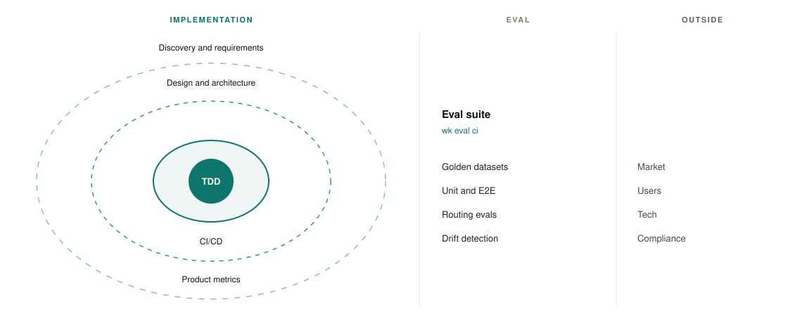

Paper theme · live site tokens
Build in nested loops. Gate with evals. Outside pressure feeds the suite.
Same three-column story as the source diagram, restyled to IBM Plex, paper, and the live teal. No banners, shadows, or gold hex.

What changed from the source
-
Chrome
Dropped the all-caps platform title, coloured header bars, drop shadows and 8px dashes. One paper surface, hairline column rules.
-
Tokens
Live site:
#f3efe6paper,#0f766eteal,#8a7a66for eval and outside. -
Copy
Sentence case. Eval list is what the kit actually gates: datasets, tests, routing, drift. Not hallucination scans.